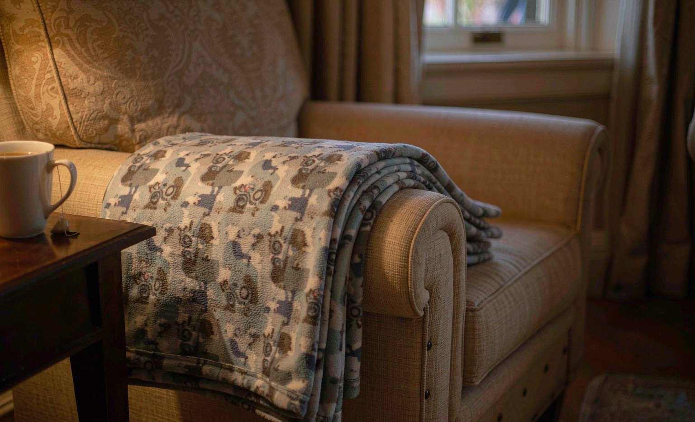
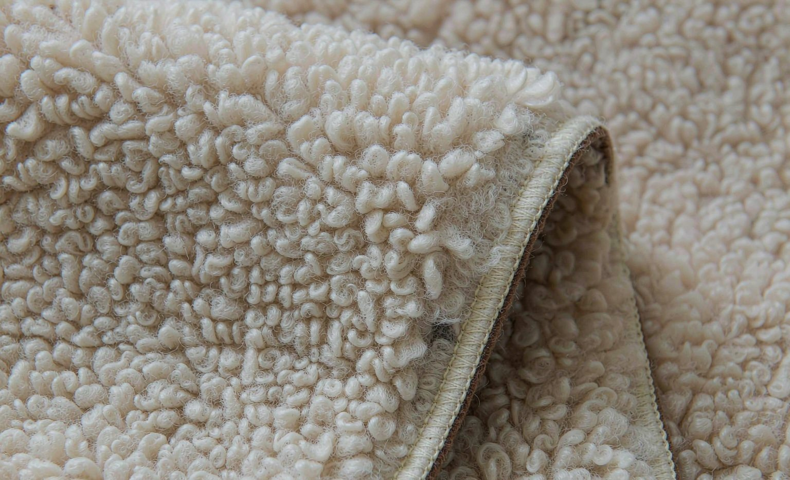

Short answer: ordering a custom photo blanket for my grandma's 80th birthday was one of the best gift decisions I have made. The blanket arrived in nine days, the print looked sharp, and she teared up when she spotted the family photos. The process was easier than I expected, though I would order a size up next time. We recommend doing a test layout of your photos before you hit the order button.

Why I Chose a Photo Blanket Over Other Gifts
My grandma turned 80 in June, and she is the person who has everything. She does not need more perfume, and jewelry felt impersonal. What she does do, every single evening, is sit in her armchair with a cup of tea and the television on. A blanket with our family photos on it would live exactly where she already spends her time, which made it feel like the obvious choice over a mug she might hide in a cupboard.
I also wanted something my kids could be part of. We picked six photos together, including one of my son as a newborn being held by her, and one from our last trip to the coast. That selection process took longer than the ordering did.
The Ordering Process, Step by Step
I placed my order through Shutterfly's custom fleece blanket line, and its ordering flow works like most sellers':
- Pick the blanket size and fabric (I chose a 50 by 60 inch fleece with sherpa backing)
- Upload photos and drag them into the layout grid
- Adjust each photo's crop and position until nothing important gets cut off at the edges
- Preview the final design at full size before paying
- Order and wait for a confirmation email with a mockup attached
The preview step saved me once. One beach photo had my daughter half cropped out of the frame, which I only noticed in the full-size preview. I would have been gutted to open the package and find that.
Shipping and Unboxing
Production took four business days and shipping took five, so the blanket landed nine days after I clicked order. It came vacuum sealed in a plastic sleeve inside a simple mailer bag. My first thought when I pulled it out was that it felt thinner than I expected, but it fluffed up after a day out of the packaging.
My Order at a Glance
| Stage | What Happened | Time It Took |
|---|---|---|
| Photo selection | Six family photos chosen and approved by the kids | One evening |
| Upload and layout | Cropping, repositioning, and full-size preview | About 40 minutes |
| Production | Printing, sewing, and quality check | 4 business days |
| Shipping | Standard tracked delivery | 5 business days |
| Total | Click to doorstep | About 9 days |
Print Quality After Three Months
Three months and about eight washes later, the photos still look genuinely good. There is very slight softening on the smallest faces in the group shot, which you only notice if you know what to look for. The colors have not shifted noticeably. I wash it on cold, gentle cycle, and I follow the routine I later wrote up in my guide to washing printed blankets, which is probably why it has held up so well.

What I Would Do Differently
- Order the 60 by 80 inch size instead of 50 by 60, because she likes to fully tuck it around herself
- Use fewer, larger photos; six photos on one blanket means each face is smaller than I realized
- Double-check the color of the backing fabric in daylight, since the gray read more blue in the preview
Is a Photo Blanket Worth the Money?
For an occasion gift for someone who loves photos, absolutely. My 50 by 60 inch blanket came to $52 plus $9.99 standard shipping, about the price of a nice bouquet that would have died in a week, and this blanket gets used every single night. If you are ordering for a parent or grandparent, take your time with the photo selection, because that choice matters more than the seller you pick.
Frequently Asked Questions
How long did the custom photo blanket take to arrive?
Mine took nine days from order to doorstep: four business days of production and five business days of standard shipping. Ordering two to three weeks before a birthday removes any stress about timing.
What size photo blanket should I order?
For an adult who will actually use the blanket daily, the 60 by 80 inch size is the safer choice. The 50 by 60 inch size works well as a lap blanket but is small for full coverage.
Did the family photos print clearly?
Yes. Sharp, well-lit photos printed cleanly, and the print has stayed sharp through repeated cold washes. Blurry or low-resolution phone photos are the main risk, so use the largest files you have.
How much did the custom blanket cost?
My 50 by 60 inch fleece sherpa blanket from Shutterfly cost $52 plus $9.99 shipping. Prices vary by seller and size, but expect the larger sizes to run noticeably more than the standard lap size.